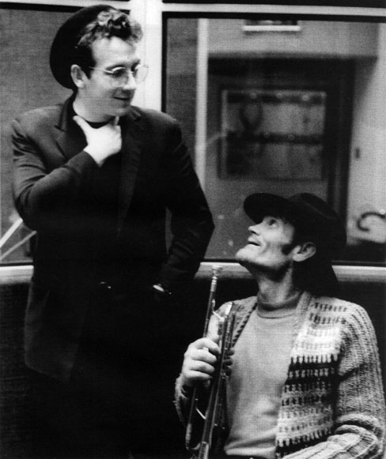
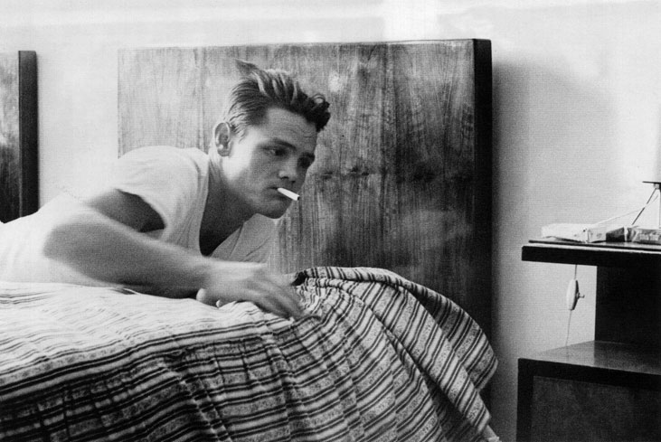
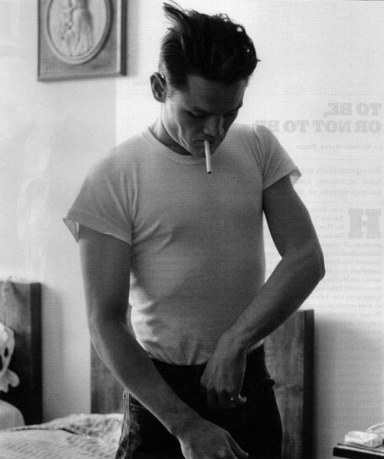

Чет Бейкър
Чет Бейкър
Чет Бейкър е талантлив. И Дизи Гилеспи е талантлив. Чарли Паркьр сьщо. Двамата сигурно са по-талантливи от Чет Беикьр. Но за тях не се говори така, както се говори за Чет. За него се говори тихо. И винаги има какво да кажеш. Какво точно се гобори за Чет ли? Много неща. Говори се за външния му вид, за наркотиците, за тромпета, за странните привички, за мистериозната смърт, за отношенията с баща му, за амфетамините, за децата му, за арестите, за жените, за музиката, за наивната му глупост и пословичната му грубост. Думата мистериозна ли използвах на едно място? Всъщност всичко около него е мистериозно. Сега ми се пише за Чет Бейкър. Сега ми се слуша Чет Бейкър. Защото е мистериозен. В 3 часа и 10 минути през нощта, петък срещу събота, Чет Бейкър е намерен мъртъв в Амстердам. Годината е 1988, той е на 59 години. Полицията го открива на улицата и установява, че е паднал от втория етаж на прозореца на хотелската си стая. Дали е паднал сам, или е бутнат, това остава неизвестно. Известно е обаче, че видът му няма нищо общо с онзи Чет, за който ми се пише. Назад към 50-те години на миналия век.

Елвис Костело и Чет Бейкър в звукозаписното студио, 1983
Двадесетгодишен, прекалено добре изглеждащ, работи с Чарли Паркър. Чет Бейкьр печели с един поглед сърцата на дамите в клуба и на критиците в престижните списания. Свири на тромпет, но и пее. „Не знам дали съм тромпетист, който пее, или певец, който свири на тромпет" - обича да казба Чет. От 50-те нека мръднем по-насам, към 60-те. Тогава Чет е тридесет и няколко годишен, пристрастен към хероина, често арестуван, депортиран от страна в страна, със слаби записи -Чет Бейкър вече е развалина. И всичко това - от идеалния сваляч до идеалния пропаднал тип, за някакви си бързи десет години. Полицейски източници твърдят, че преди смъртта си Чет взема 6 грама хероин. Без да броим обичайните кокаин, кодеин, алкохол и хашиш, които Чет използва почти непрекъснато. Когато погледнеш обложките на големите му албуми, там, където той прилича на Джеймс Дийн и е престъпно елегантен, в главата ти витаят други мисли. Когато чуеш как свири или как пее шепнешком, когато опиташ вечер от музиката му, няма как за миг да не си помислиш, че докато звездата е падала от небето, той си е пожелавал неговото име да бъде единственото определение на думата сооl. Чет Бейкър = сооl. Това е. Нека ви кажа нещо. Възможно е да си мислите, че друг музикант, далеч по-известен, по-наперен или по-добър, е изглеждал по-добре и е бил истински символ на онзи таен сооl jazz момент от музикалната история. Възможно е да си го мислите. Но Чет Бейкьр е единственият. Повярвайте ми. Чет Бейкър е всичко, което се крие зад определението сооl jazz. Чет Бейкър е студен бриз и люта лава. Чет Бейкьр шепне и бие едновременно. Чет Бейкър кани дамата на романтична вечеря, а следващата нощ е забравил за нея. Чет Бейкър пее My Funny Valentine, както никой друг не може да изпее.

На 16 август 1952 Чет Бейкър записва с квартета на Гери Мълиган знаменитата джазова тема Bernie's Tune, след което придобива огромна популярност
И това е достатъчно. Дарбата му е открита, как да кажа, някак интуитивно. Той свири и пее вглъбено, чувствително, нежно, ефирно, бавно, тихо. Без да знае, без да осъзнава, без да тренира, без да се учи - има онази особена връзка, по-точно - притежава онази особена връзка между ушите и пръстите, която кара останалите музиканти по онова време да го мразят. И тя е дарба, развита, дадена му наготово. Другите го мразят. Защото Чет Бейкър е отчайващо добър. Млад и романтичен. Такава, каквато е в представите ни Италия. Затова отидох до Италия, за да го послушам. В края на миналия месец. Бях слушал малко Чет Бейкър като малък, 17-18-годишен, но го открих истински през 2000 година, когато гледах за първи път талантаивият мистър Рипли. В този филм има много Чет Бейкър. Този филм е сниман в Италия и аз реших да се разходя по местата, където звучи Чет Беикър. Какво е Талантливият мистър Рипли освен Чет Бейкър? Ето какво - Дики Грийнлийф (Джъд Лоу), син на богат индустриалец, прекарва чудесно дните си в Южна Италия в компанията на Марж (Гуинет Полтроу), пясъка, морето, една Vespа, една любовница и много джаз. Том Рипли (Мат Деймън) трябва да впечатли Дики. Най-лесният начин е да понаучи това-онова за любимите джаз изпълнители на Дики и в удобен момент да пусне стръвта. Един лежерен следобед, когато на терасата Дики, Марж и Том пият или не пият мартини - вече не си спомням, нашият човек е готов с въпросната стръв, която Дики може да захапе. Съвсем небрежно, без да иска, Том изпуска чантата на земята и от нея изпадат плочи на Чет Бейкър, Чарли Паркър, Дизи Гилеспи... Най-отгоре е Чет.

Чет Бейкър в Тоскана, 1961
Приятелството межди Дики и Том вече е сигурно - интересите са общи, време е за джаз. Тези разхвърляни плочи, които се появяват на екрана за десетина секунди, играят ключова роля. карат те да осъзнаеш, че трябва бързо да си купиш плоча на Чет Бейкър. Да си купиш грамофон. Да разбереш защо в психотрилъра, какъвто е Талантливият мистър Рипли, основна роля играе не Деймън, нито пък Гуинет Полтроу или Джьд Лоу, да не говорим за красивата италианска действителност. Основна роля играе джазът. И джазът свършва с този филм, така както и филмът свършва с джаз. Тази кървава лента, която изследва по потаен ала Хичкок начин действията на един психопат и действията на неговите жертви. Очаквано или неочаквано филмът завършва не с убийство, а с една особено добра версия на My Funny Valentine, изпълнена от Мат Деймън. Когато за първи път мислиш за Чет Бейкър, слушаш музиката му или четеш за европейските му пътешествия, мечтаеш за пътуване из Италия с червен Алфа Ромео Sportwagon, криволичещи пътища, тесни и широки, острови като Капри, но не само. На един такъв остров е снимана част от този филм. Там точно е вилата, където Мат Деймън изпуска на пода няколко плочи. Те се разпиляват. Бях до същата вила преди няколко дни. После се върнах в Неапол, където пих кампари със сода и мислех за Чет. Трябва да си купя грамофон. Не можеш да слушаш Чет Бейкър на компактдиск.